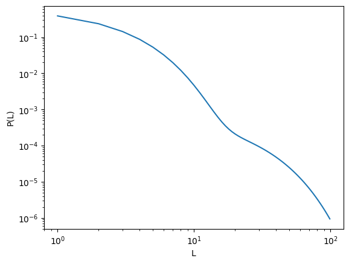
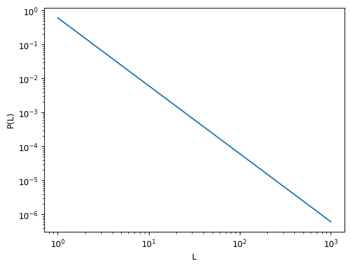
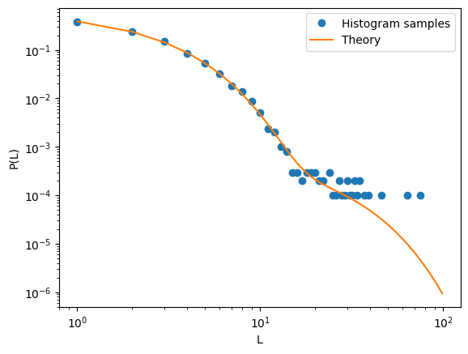
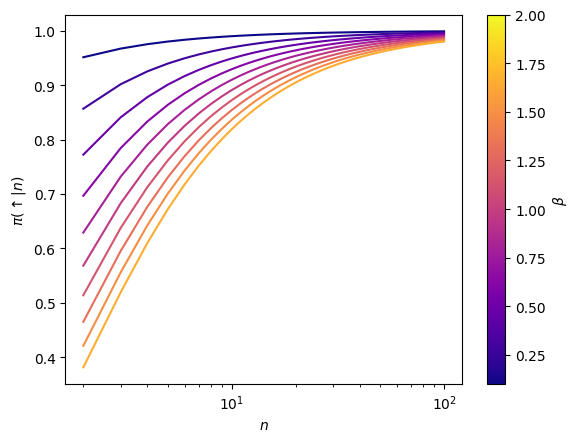

Report an issue
source
pdf_multimode (L:int, lambdas:list, probs:list)
Computes the discrete PDF of multi-mode exponential of the form
\[ \Pr(L) = \sum_{i=1,2} \omega_i (1-e^{-1/\lambda_i}) e^{-(L-1)/\lambda_i} \, , \] where \(\omega\) is the probability of each mode and \(\lambda\) it’s scale.
lambdas = np.array([2,15]) probs = np.array([0.99, 0.01]) L_max = 100 plt.loglog(np.arange(1, L_max), pdf_multimode(L = np.arange(1, L_max), lambdas=lambdas, probs=probs) ) plt.xlabel('L'); plt.ylabel('P(L)')
Text(0, 0.5, 'P(L)')

pdf_powerlaw (L:float, beta:float=1)
Computes the discrete PDF of a powerlaw of the form \[ \Pr(L)\sim L^{-1-\mathrm{beta}}. \]
plt.loglog(np.arange(1, 1000), pdf_powerlaw(L = np.arange(1,1000), beta = 1) ) plt.xlabel('L'); plt.ylabel('P(L)')

pdf_discrete_sample (pdf_func:object, num_samples:int, **args_func)
Samples discrete values from a given PDF
samples = pdf_discrete_sample(pdf_func = pdf_multimode, num_samples=10000, L = np.arange(1, L_max), lambdas=lambdas, probs=probs) counts = np.bincount(samples)[1:] plt.loglog(np.arange(1, len(counts)+1), counts/counts.sum(), 'o', label = 'Histogram samples') plt.loglog(np.arange(1, L_max), pdf_multimode(L = np.arange(1, L_max), lambdas=lambdas, probs=probs), label = 'Theory' ) plt.xlabel('L'); plt.ylabel('P(L)'); plt.legend()
<matplotlib.legend.Legend>

get_policy_from_dist (n_max, func, renorm=True, **args_func)
Given a PDF of step lengths, calculates the corresponding policy
L = 100 betas = np.linspace(0.1, 2, 10) colors = plt.cm.plasma(np.linspace(0,1,len(betas)+2)) fig, ax = plt.subplots() for beta, color in zip(betas, colors): policy = get_policy_from_dist(n_max = L, func = pdf_powerlaw, beta = beta) ax.plot(np.arange(2, L+1), policy[1:], c = color) # Plot features plt.setp(ax, xlabel =r'$n$', ylabel = r'$\pi(\uparrow|n)$', xscale = 'log') cbar = fig.colorbar(plt.cm.ScalarMappable(norm= mcolors.Normalize(vmin=betas.min(), vmax=betas.max()), cmap=plt.cm.plasma), ax = ax) cbar.set_label(r'$\beta$')
